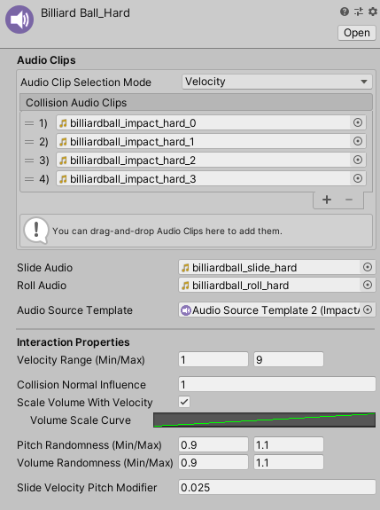
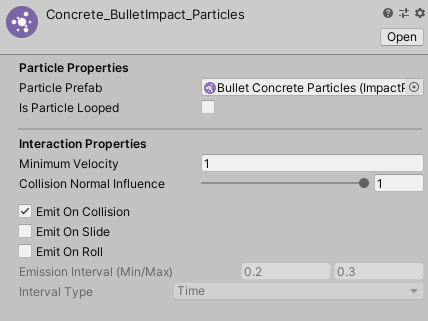
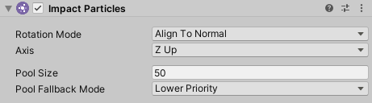
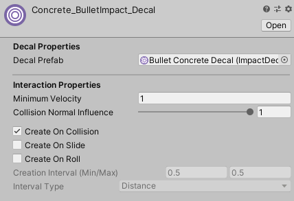
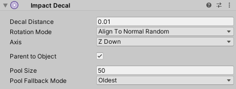

Impact Interactions
Impact Interactions are responsible for the specific behaviors that occur when an interaction happens. There are 3 kinds of interactions that come with Impact.
Audio Interactions
Audio Interactions are used to play sounds for interactions. You can create a new Audio Interaction by going to .
Audio Interactions can have a list of audio clips to play on collision. There are 2 modes that can be used to select the audio clips:
- Velocity – Base the output audio clip on the input velocity. The velocity will be converted to a normalized (0 to 1) value based on the Velocity Range and Collision Normal Influence, and that value will be used to select the output audio clip. The first element corresponds to a value of 0 and the last element corresponds to a value of 1.
- Random – Select a random audio clip from the list.
In addition to the collision audio clips, you can assign audio clips to Slide Audio and Roll Audio to use when the object is sliding or rolling. For best results, these sounds should be looped.
Audio Interactions have the following additional properties:
- Velocity Range – Input velocities will be converted to a normalized (0 to 1) value based on this range and the Collision Normal Influence. The normalized value will then be used with the Scale Volume With Velocity property and the Velocity Audio Clip Selection Mode.
- Collision Normal Influence – How much the input normal will effect the calculated intensity of the collision. This can be used so that grazing collisions will have a low volume even if they have a high velocity.
- Scale Volume With Velocity – If checked, the output volume will be multiplied based on the input velocity. The value to multiply by comes from the Volume Scale Curve.
- Pitch Randomness – A random multiplier for the output pitch.
- Volume Randomness – A random multiplier for the output volume.
- Slide Velocity Pitch Multiplier – Increases the pitch of sliding and rolling sounds based on the input velocity, so higher velocities will have a higher pitch. Typically this should be a very low value.
The Audio Source Template prefab must have an Impact Audio Source component attached to it. You can add this component to your prefab by going to . If you are using custom audio sources, you can use a custom component that inherits from ImpactAudioSourceBase.
Impact Audio Sources have three properties:
- Audio Source – The audio source to use for playing sounds.
- Pool Size – The size of the object pool created for this audio source.
- Pool Fallback Mode – How the object pool should handle cases when you want to retreive an audio source, but all audio sources are in use.
- None – Do nothing and no sound will be played.
- Lower Priority – "Steal" an active audio source with a lower priority than this one. Priority is set on Impact Objects.
- Oldest – "Steal" the audio source that has been active the longest.
Particle Interactions
Particle Interactions are used to display particle effects for interactions. You can create a new Particle Interaction by going to .
Particle Interactions have the following properties:
- Particle Prefab – The prefab for the particles that will be shown.
- Is Particle Looped – Does the particle system loop? Looping particle systems can be useful for sliding and rolling particles.
- Minimum Velocity – The minimum input velocity required for then particle effect to be shown.
- Collision Normal Influence – How much the input normal will effect the calculated intensity of the collision.
- Emit On Collision – Should particles be displayed for collisions?
- Emit On Slide – Should particles be displayed when sliding?
- Emit On Roll – Should particles be displayed when rolling?
- Emission Interval – If a particle is not looped, but should be played on slide or roll, this is the interval between each emission while the object is sliding or rolling.
- Interval Type – Whether the Emission Interval is based on time (seconds) or distance (units/meters).
The prefab used for Particle Interactions must have the Impact Particles component attached to it. You can add this script to your prefab by going to . You can also use a custom component that inherits from ImpactParticlesBase.
Impact Particles have the following properties:
- Rotation Mode – How the particles should be rotated on the surface.
- Align To Normal – Align the particles to the surface normal.
- Align To Velocity – Align the particles with the velocity direction.
- Align To Normal And Velocity – Align the particles to the surface normal, and also rotate them to match the velocity direction.
- No Rotation – Don't do any rotation.
- Axis – Which axis of the particles should be aligned to the surface.
- Pool Size – The size of the object pool created for this particle system.
- Pool Fallback Mode – How the object pool should handle cases when you want to retreive a particle system, but they are all in use.
- None – Do nothing and no effect will be played.
- Lower Priority – "Steal" an active particle system with a lower priority than this one. Priority is set on Impact Objects.
- Oldest – "Steal" the particle system that has been active the longest.
Decal Interactions
Decal Interactions are used to place decals on surfaces for interactions. You can create a new Decal Interaction by going to .
Decal Interactions have the following properties:
- Decal Prefab – The prefab for the decal that will be placed.
- Minimum Velocity – The minimum input velocity required for then decal to be placed.
- Collision Normal Influence – How much the input normal will effect the calculated intensity of the collision.
- Create On Collision – Should decals be created for collisions?
- Create On Slide – Should decals be created when sliding?
- Create On Roll – Should decals be created when rolling?
- Creation Interval – The interval between each decal while the object is sliding or rolling.
- Interval Type – Whether the Creation Interval is based on time (seconds) or distance (units/meters).
The prefab used for Decal Interactions must have an Impact Decal component attached to it. You can add this script to your prefab by going to . You can also use a custom component that inherits from ImpactDecalBase.
Impact Decals have the following properties:
- Decal Distance – How far from the contact point the decal will be placed (along the contact normal). This is mainly useful if the decal uses Projectors.
- Rotation Mode – How the decal should be rotated on the surface.
- Align To Normal Random – Randomly rotate the decal about the surface normal.
- Align To Normal And Velocity – Align the decal with the surface normal, and also rotate to match the velocity direction.
- Align To Normal Only – Align the decal to the surface normal but do not do any extra rotation.
- Axis – Which axis of the decal should be aligned to the surface.
- Parent to Object – Should the decal be parented to the object it is placed on? You should check this if decals will be placed on dynamic objects, so that the decal will follow the object.
- Pool Size – The size of the object pool for this decal.
- Pool Fallback Mode – How the object pool should handle cases when you want to retreive a decal, but they are all in use.
- None – Do nothing and no decal will be placed.
- Lower Priority – "Steal" an active decal with a lower priority than this one. Priority is set on Impact Objects.
- Oldest – "Steal" the decal that has been active the longest.
Decal Management
Since decals can be parented to objects as a means of attaching them, special care must be taken when managing the pooled decal objects, especially if an object with decals attached to it gets destroyed.
Any object that a decal attaches to needs an Impact Decal Manager component. This script is responsible for keeping track of all of the decals attached to an object. If the object does not already have this component, it will be automatically added. However, you can manually add the component yourself by going to . You have some flexibility as to where you can add this component. For example, if you have a character or a ragdoll that will recieve decals, you can add the Impact Decal Manager component to the root of the character, rather than adding a component to each part of the armature.
The Impact Decal Manager also has a small API you can use if you need to manually manage decals. Most notable is the ReleaseAllDecals method, which will release all decals attached to the object and return them to their object pools.
If the object is destroyed, the Impact Decal Manager will automatically move all of the attached decals back into their pools so that they are not also destroyed. However, this does not work on scene load and decals will still be destroyed. If this happens, the decal object pools will automatically re-instantiate the destroyed decals on scene load. If you want to avoid the performance penalty of instantiating decals again, the only workaround is to call the static function ImpactDecalPool.ReturnAllDecalsToPools before you change the scene. This method will release all decals from the objects they are attached to.